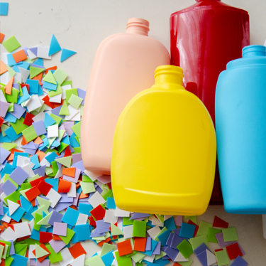
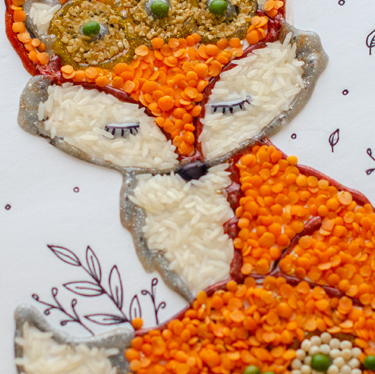

Mosaics from Recycled Materials
Not only is the 'Reduce. Reuse. Recycle.' initiative Earth-friendly, it's also KidART friendly! There are so many crafts you can make with children using recyclables, but today I'd like to focus on the use of plastic bottle to create a form of mosaic art.

Seed Art Ideas
There is nothing quite like seeds to signify spring. While our planting days are still far off in the future, we do have some seeds. I found some great crafts and art activities for kids that use seeds so I thought I would share them with you here, just in case you too were needing a reminder of the promise of spring.